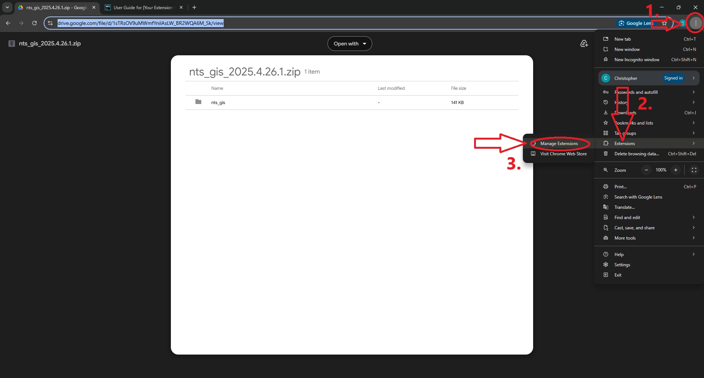
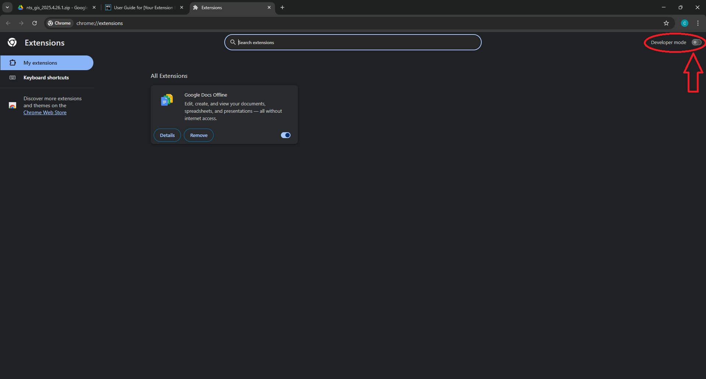
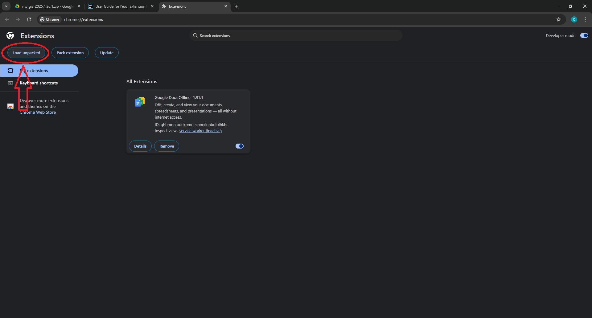
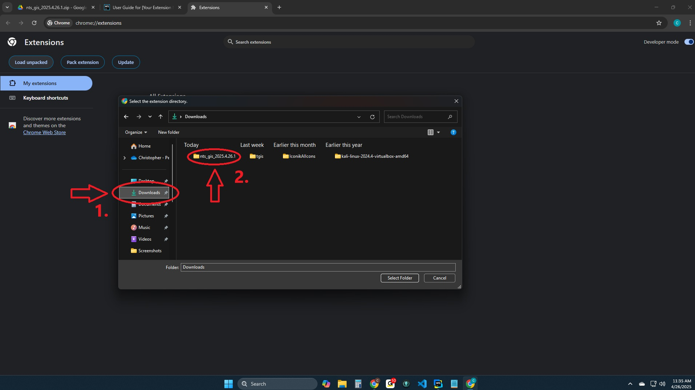
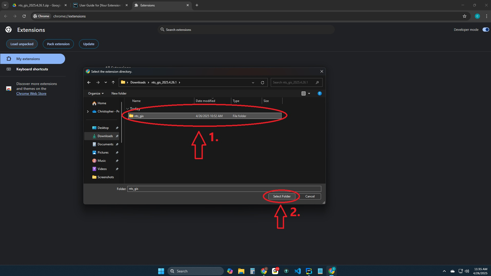
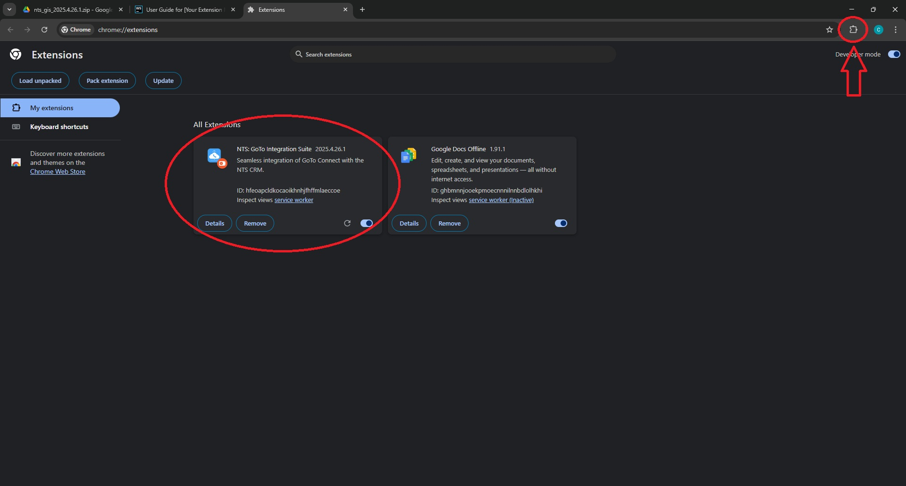
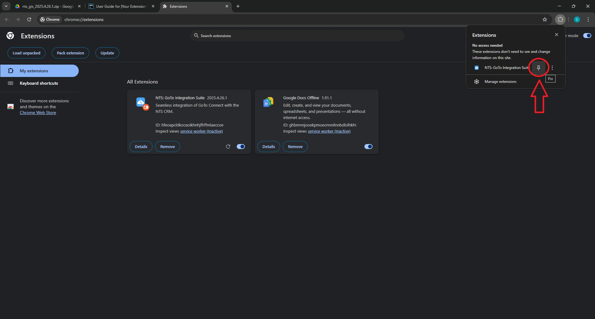
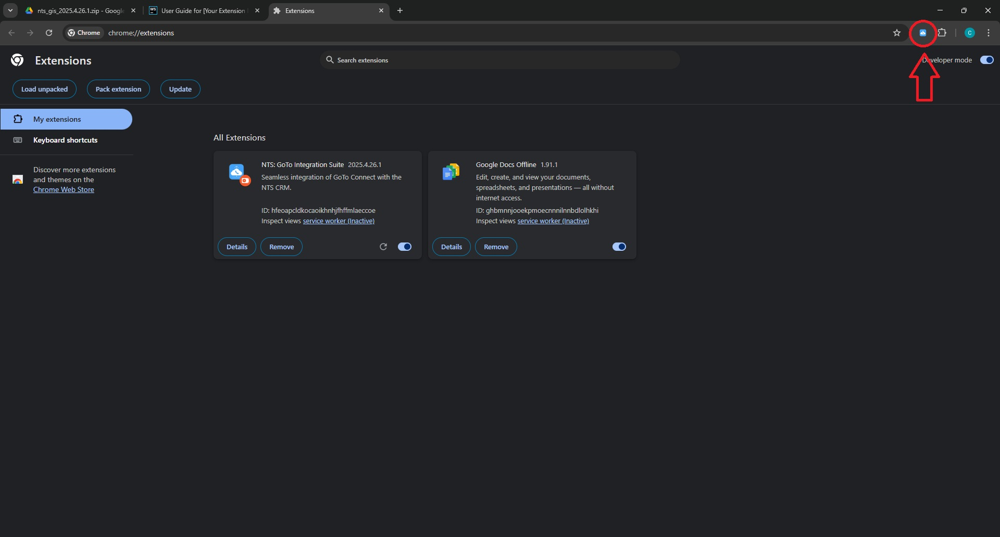

Installation
If you prefer video instructions click here.
After you download and extract the extension, you will need to install it.
Step 1: Click on the 3 dots to the right of the address bar.
Step 2: Hover over the extension menu.
Step 3: Click Manage Extensions.

This will open the Extensions page.
Step 4: Click the Developer mode toggle.

Step 5: Click the Load unpacked button.

Step 6: If you extracted the extension to the default location, then you will click on the Downloads folder.
Step 7: Double-click on the extracted folder.

Step 8: SINGLE CLICK to select the folder.
Step 9: Click the Select Folder button.

You should now see the extension in the list of extensions.
Step 10: Click the puzzle piece icon next to the address bar.

Step 11: Click the thumbtack icon to pin it to the toolbar.

You should now see the extension's icon in the toolbar.
